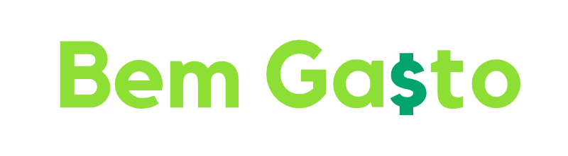

Você acredita que a educação financeira pode mudar o país?
Se você se identificou com o propósito, inscreva-se e venha ser um voluntário Bem Gasto.
Além de ajudar a melhorar o mundo através da educaçãofinanceira você também passa a fazer parte de um grupo com interesses comuns. Organizamos reuniões e apresentações sobre finanças, empreendedorismo e outros temas, direcionadas aos voluntários e parceiros.
Se você acredita que a educação financeira pode mudar o mundo e quer fazer parte dessa jornada, venha fazer parte do time.
Ao oferecer seu tempo e energia como voluntário, você tem a oportunidade única de fazer uma diferença tangível nas vidas dos outros. Seja ajudando a alimentar os necessitados, ensinando crianças carentes, ou simplesmente oferecendo seu ouvido e apoio, cada ação voluntária tem o poder de causar um impacto positivo duradouro.
O voluntariado não apenas contribui para a comunidade, mas também enriquece sua própria vida. Você terá a chance de desenvolver novas habilidades, aprender sobre diferentes culturas, desafiar-se em novos ambientes e descobrir novas perspectivas sobre o mundo.
Ao se voluntariar, você se conecta com pessoas de todas as esferas da vida que compartilham um objetivo comum: ajudar os outros. Essas conexões podem levar a amizades duradouras e uma sensação de pertencimento a uma comunidade que se preocupa e trabalha junta para o bem maior.
Ser voluntário é uma maneira de expressar gratidão pelas bênçãos e oportunidades que você tem em sua própria vida. É uma chance de retribuir àqueles que podem não ter sido tão afortunados, oferecendo o seu tempo e recursos para tornar suas vidas um pouco mais brilhantes.
À medida que você testemunha o impacto positivo de suas ações, você se torna uma fonte de inspiração e esperança para os outros. Suas escolhas e seu compromisso em fazer a diferença podem motivar e encorajar os que estão ao seu redor a também se envolverem na construção de um mundo melhor.